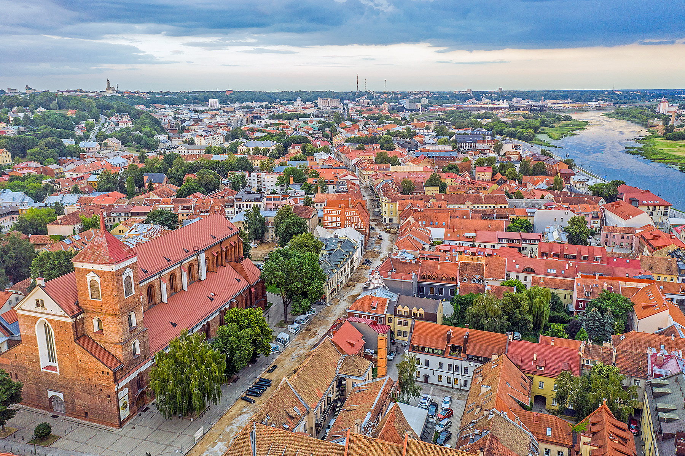

Welcome to Kaunas
Kaunas is the second-largest city in Lithuania after Vilnius and an important centre of Lithuanian economic, academic, and cultural life. Kaunas was the largest city and the centre of a county in the Duchy of Trakai of the Grand Duchy of Lithuania and Trakai Palatinate since 1413. In the Russian Empire, it was the capital of the Kaunas Governorate from 1843 to 1915.